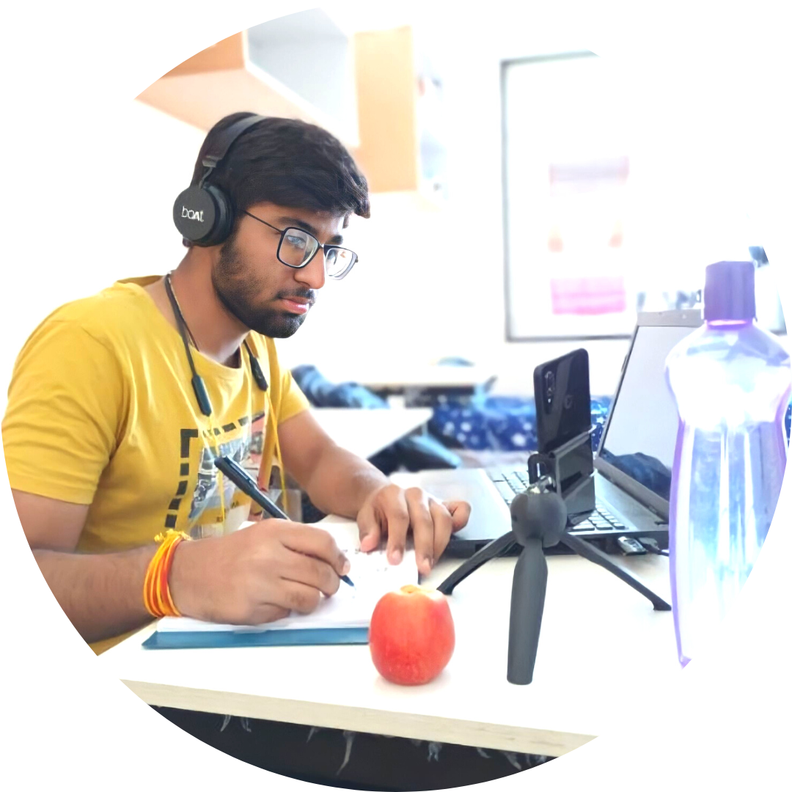

Kirtan Kushwah

E-Mail : kirtankushwah03@gmail.com
Address : Aasra Heights Apartment, Bhopal
You here, again ?
Let's connect and meet over a coffee


ㅤㅤㅤㅤㅤㅤI am an avid learner and comfortable in adapting new technologies , am also a tech geek who is passionate about technologies and programming.
I am a JAVA programmer and my work follows DevOps Culture.I am also an Open-Source enthusiast and ensue agile practices in software development.
I am currently working on Cloud Computing and DevOps.
Also throughout my experience till date , I have been in many tech communities where I have grown connections amnong developers, HRs and tech enthusiasts. Over the time, I have experienced that projects augments,as much as it gets reviewed and when new ideas are eventually implemented on it, this has intrigued me more towards Open-Source.